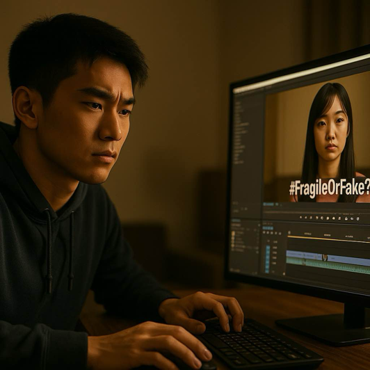

Jack repeatedly watched the video where Rose rejected him and decided to edit and release it, guiding the audience to have a negative impression.
Jack holds back and secretly watches Rose to see how she reacts next.
Jack cuts out the most intense segments and pairs them with emotional titles
Jack retains the entire frame and plans to produce a multi-perspective version
Jack holds back and secretly watches Rose to see how she reacts next.